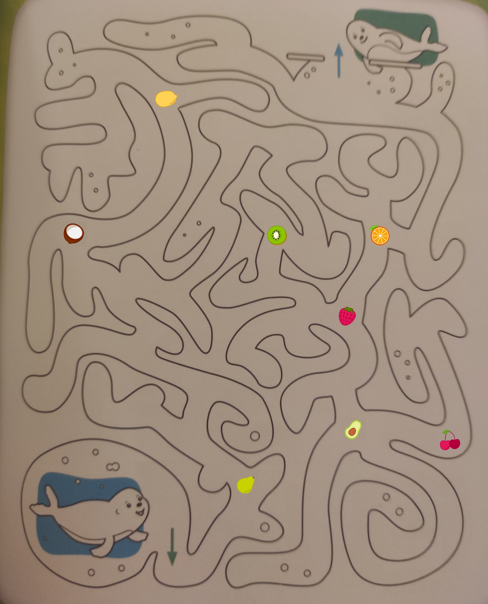
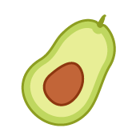
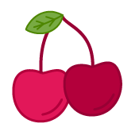
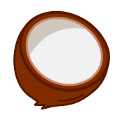
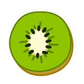
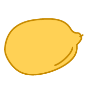
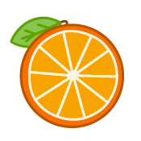
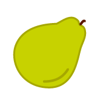
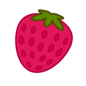

Mrok spowija korytarze, którymi się przemieszczasz. Blade lampki od czasu do czasu rzucają odrobinę światła, lecz poza tym - ciemność. W końcu dochodzisz do
komputera głównego zajmującego się obsługą filtrów. Tuż obok znajduje się wnęka, gdzie przechowywany jest filtr. Gdy prowadzisz tam swój wzrok, nagle zaczynasz czuć
lekkie mrowienie. Czy to możliwe? Fragment klucza znajduje się właśnie tu? Może to jego obecność sprawiła, że flitr przestaje działać. Gdy zastanawiasz się nad możliwymi
konsekwencjami i skutkami swoich odkryć, dostrzegasz coś jeszcze. Na ścianie, tuz obok filtru znajduje się znak. Mówi on o tym, by w razie gdyby filtr przestał działać i trzebaby
go wymienić, należy udać się do pomieszczenia, do którego prowadzi zmyślna mapka. Hmm, skoro filtry przetrzymywane są w tym budynku, to po co ludzie dawaliby ci filtr ze sobą.
Spoglądasz na podarunek, który zebrałaś ze sobą i zauważasz, że miga on na czerwono. I to, zdaje się, miga coraz szybciej. Gdy zaglądasz do filtru wstawionego na miejsce widzisz, że
te dwa przedmioty znacznie różnią się od siebie. Czy to możliwe, że zostałaś zrobiona w bambuko? Zamiast wejść i wymienić filtr, włamałaś się, aby podsadzić bombę!
Ok, ok, nie ma powodu do paniki. Wszystko jest pod kontrolą. Starając się myśleć na chłodno dochodzisz do wniosku, że w filtrze musi znajdować się fragment klucza. Oznacza to, że ty
sama jesteś względnie bezpieczna. W razie kłopotów zawsze możesz zabrać fragment i zabierać siebie stąd jak najszybciej. Pytanie tylko co z bombą. Skoro ktoś zaplanował cały
ten przekręt i to w środku miasta, to może oznacza to, że jego władca wcale nie jest taki dobry jak by się wydawało i należy mu się nauczka. Może chcą wykorzystać bombę, żeby
tylko go nastraszyć? Z drugiej strony, co jeżeli ona rzeczywiście wybuchnie i zginie przez to cała populacja tego miasta? Nigdy tu zapewne nie wrócisz i nie masz nadal pewności
czy to nie jest tylko jakiś sen, ale musisz dokonać wyboru. Gdy zabierzesz fragment klucza, filtr prawdopodobnie ulegnie uszkodzeniu. Czy w jego miejsce chcesz wstawić bombę, którą
masz pod ręką, czy wolisz przejść się po nowe filtry, które powinny uchronić miasto?
Nie ma co ryzykować. Zbyt wiele żyć (potencjalnie wyimaginowanych) może od tego zależeć. Rzucasz jeszcze raz okiem na bombę i twoje przypuszczenia
zdają się potwierdzać - bomba miga coraz szybciej, co znaczy, że niedługo wybuchnie. Nie masz jednak pojęcia ile czasu ci zostało, jednak starasz się nie guzdrać za bardzo.
Wybierasz się po nowy filtr, jednak aby trafić w odpowiednie miejsce musisz skorzystać ze wskazówki umieszczonej w tym rysunkowym labiryncie. Za którymi owocami masz podążać?









Dobra, wiesz już którą ścieżką podążać, zatem bez problemu pokonujesz korytarze. Serce bije ci coraz mocniej i ciężko powiedzieć czy z wrażenia, czy może
z niecodziennego wysiłku jaki wiąże się z ratowaniem wielkiego miasta. Gdy dochodzisz do ostatniego z owoców, które cię prowadzą, już jesteś w stanie dojrzeć światło pochodzące
z magazynu filtrów. Ale co to. Jeszcze jeden labirynt? Próbujesz zignorować te naścienne malowidło i wedrzeć się do środka, jednak drzwi nie dają za wygraną. W końcu przyznajesz,
że zapewne ten labirynt stanowi klucz do otwarcia tych drzwi. No dobrze, zatem - który z bohaterów potrzebuje okularów?